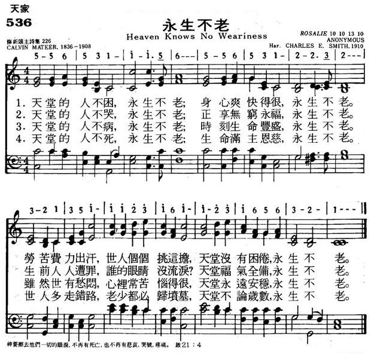
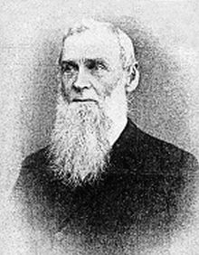

|
|
|
|
NIL |
536永生不老
1.天堂的人不困，永生不老；
身心爽快得很，永生不老。 劳苦费力出汗，世人个个挑这担， 天堂没有困倦，永生不老。 2.天堂的人不哭，永生不老； 正享无穷永福，永生不老。 生前人人遭罪，谁的眼睛没流泪， 天堂福气全备，永生不老。 3.天堂的人不病，永生不老； 时刻生命丰盛，永生不老。 虽然世有愁闷，心里常苦恼的很， 天堂永远安稳，永生不老。 4.天堂的人不死，永生不老； 生命满主恩慈，永生不老。 世人多走错路，老少都必归坟墓， 天堂不论岁数，永生不老。 |
|
https://www.mred365.cn/szxg/7539.html
 |
|
|
|
|

狄考文Calvin Wilson Mateer，1836年－1908 [編輯]
|
Calvin Wilson Mateer 狄考文 |
|
|---|---|
|

狄考文
|
|
| 出生 | 1836年1月9日 美國賓夕法尼亞州坎伯蘭縣 |
| 逝世 | 1908年9月28日（72歲） 德屬膠澳租借地青島 |
| 職業 | 傳教士 |
| 配偶 | 邦就烈（Julia Brown） |
{kind=link}
卡爾文·威爾遜·馬蒂爾（Calvin Wilson Mateer，1836年－1908年），漢名狄考文，美國人，美北長老會來華傳教士。
生平[編輯]
狄考文出生於賓夕法尼亞州坎伯蘭縣的一個蘇格蘭-愛爾蘭裔家庭[1]。1857年畢業於加農斯堡的傑弗遜學院（Jefferson College）。後進入西方神學院（Western Theological Seminary）學習，期間曾在俄亥俄州德拉瓦的長老會服務兩年[2]。1862年12月與來自俄亥俄州德拉瓦的邦就烈（Julia A. Brown）結婚。同年獲得神學博士學位，並被按立為牧師。[3]
1863年7月3日，狄考文夫婦自紐約與郭顯德一同乘船赴中國傳教，同年抵達上海，次年1月15日乘船至山東登州（今蓬萊），接替傳教士倪維思的工作。1864年在登州開設「蒙塾」，1876年擴建為登州文會館（Tengchow College），1882年增設高等學科，有說法稱登州文會館因此為中國第一所高等學府。狄考文在校內開設小型博物館，並親自編寫課本，至1895年已編寫《筆算數學》、《代數備旨》、《電學全書》等28本教科書，亦曾為外國傳教士編寫漢語教材《官話類編》（A Course of Mandarin Lessons, based on Idiom），於1892年出版[4]。其夫人邦就烈在文會館引入西方音樂教學。文會館後來與其他教會學校合併為齊魯大學。[3]
{kind=link}
1881年，其三弟狄樂播受其感召至登州，在狄考文處學習漢語，並於1883年赴濰縣開辦樂道院。1890年，狄考文當選官話和合本聖經翻譯委員會主席[5]，在王宣忱（原名王元德，畢業於文會館）的協助下參與聖經翻譯[6]。1898年1月18日，邦就烈在登州去世。1906年，和合本新約全書翻譯完成，並於次年出版。1908年，狄考文赴煙臺參加譯經研討會期間感染痢疾，於9月28日在青島福柏醫院逝世。葬於煙臺毓璜頂美國長老會墓地。[3]
參考文獻[編輯]
- ^ Daniel W. Fisher: Calvin Wilson Mateer, Forty-Five Years a Missionary in Shantung, China, A Biography, The Westminster Press, Philadelphia, 1911
- ^ Ashahel Clark Crist, History of Marion Presbytery, Press of the Delaware Gazette, 1908. [2018-04-20]. （原始內容存檔於2019-05-20）.
- ^ 3.0 3.1 3.2 狄考文. 李亞丁. 華人基督教史人物辭典. [2018-04-20]. （原始內容存檔於2017-11-02）.
- ^ Calvin Wilson Mateer. A course of Mandarin lessons, based on idiom. Shanghai: American Presbyterian Mission Press. 1892 [2018-04-20]. （原始內容存檔於2019-05-19）.
- ^ Foley, Toshikazu S. Foley. Biblical Translation in Chinese and Greek Verbal Aspect in Theory. 2009: 81.
- ^ Toshikazu S. Foley. Biblical Translation in Chinese and Greek: Verbal Aspect in Theory. BRILL. 2009. ISBN 9789004178656.
告別及懷思禮拜詩歌的使用探討 高 瓊 惠
https://ir.taitheo.org.tw/bitstream/987654321/1628/1/MACM+2010-2_%3F%3F%3F.pdf
長生不老[編輯]
長生不老（壽命長而不會衰老），相近的辭彙還有長生不死（在安全無外力狀況下擁有無限的壽命，但依舊會老化）、不老不死（在安全無外力狀況下不會衰老與死亡）、不朽（英語：Immortality）與永生（在安全無外力狀況下永遠生存而不會死亡，但會衰老）。水螅、燈塔水母是目前已知不會衰老的生物。請注意，長生不老不代表不會死亡。
宗教信仰及神話[編輯]
永生指永遠生存，或永遠存在的生命，也就是不死的意思。永生是很多人曾經追求的目標，也是很多宗教的主要核心思想之一。
古希臘宗教[編輯]
- 古希臘宗教中的「不朽」最初總是包括身體和靈魂的永恆結合，如在荷馬、赫西俄德和其他各種古代文本中所見。一般認為靈魂在冥界中永恆存在，但沒有身體的靈魂是死的。雖然絕大部分人都只能作為一個無形的死靈魂永遠存在，但一些人被認為獲得了肉體上的不朽，並被帶到了至福樂土、極樂島、海洋或字面意義上的地下。其中包括安菲阿拉俄斯、伽倪墨得斯、伊諾、伊菲革涅亞、墨涅拉俄斯和佩琉斯，以及參與特洛伊和忒拜戰爭中大部分人。有些人被認為已經死亡並在他們實現肉體不朽之前復活了。宙斯殺死阿斯克勒庇俄斯只為了將他復活成神。在特洛伊戰爭神話的某些版本中，阿基里斯在被殺之後，他的神聖母親泰蒂斯從他的葬禮柴堆中將他搶走，將他復活，並在Leuce、至福樂土或極樂島上變得不朽。被阿基里斯殺害的門農似乎有着類似的命運。 阿爾克墨涅、卡斯托爾、赫拉克勒斯和墨利克爾忒斯也是有時被認為已經復活到身體不朽的人物之一。根據希羅多德的歷史，公元前7世紀的普羅維努西斯的聖人阿里斯塔斯首次被人發現他死亡後，他的屍體從一個上鎖的房間�堮囓═F。後來人們發現他不僅復活了，而且還獲得了不朽。
- 不朽靈魂的哲學觀念首先出現在斐瑞居德斯或俄耳甫斯教中，最重要的發展是由柏拉圖和他的追隨者所倡導。然而，這從未成為希臘化思想的一般範式。 甚至在基督教時代也是如此，見諸各種哲學家對流行信仰的抱怨，許多或者絕大多數傳統的希臘人堅持認為只有特定的人死而復生，肉體不朽，其他人只能期待成為一個沒有肉體的永恆存在的死靈魂。這些傳統信仰與後來耶穌復活之間的並存並沒有在早期的基督徒身上消失，正如殉教者游斯丁所說：「當我們說……耶穌基督，我們的老師，被釘在十字架上並且死了，然後又復活了，並且升入了天堂時，我們認為他與那些宙斯的兒子沒什麼不同。」(1 Apol. 21)
異教[編輯]
基督教[編輯]
- 在《新約聖經》中這樣記錄：「這見證，就是 神賜給我們永生，這永生也是在他兒子�堶情C人有了 神的兒子就有生命，沒有 神的兒子就沒有生命。我將這些話寫給你們信奉 神兒子之名的人，要叫你們知道自己有永生。』（約一5:11-13）這『永生』就是在『神審判的日子』，不會與『第二次的死（火湖）』有份，在『新天新地』和『上帝』一同永遠活着。」
道教[編輯]
- 在道教中，長生不老是仙人的標誌。中國秦代時，方士徐福為了替秦始皇尋找長生不老藥，攜童男童女各五百，出海尋找蓬萊、瀛洲諸仙山上的仙人，結果不知所終。
- 道教中又有專門煉丹服藥（包括煉內丹及真元）的流派，目的也是為了長生不老。
- 嫦娥，后羿的妻子，偷竊了西王母的不死藥，服後奔月。
北傳佛教[編輯]
- 在北傳佛教經典中，有說法稱阿羅漢可住世一劫，菩薩及佛陀可住世更長時間。佛陀於《法華經》中有為諸大弟子授記未來世成佛，住世十二小劫至二十四小劫，更有言：「如是我成佛已來甚大久遠，壽命無量阿僧祇劫常住不滅。」[1]
原始上座部佛教[編輯]
- 在原始上座部佛教的巴利經典中並沒有長生不老和無量壽的說法，佛陀說：一切行（因緣和合之有為法）皆無常，沒有一個永恆不變的神我，沒有永恆的天庭，有生必有死，沒有一個生靈會永遠存活。即便像擁有八萬四千大劫壽元的、居住在無色界天非想非非想天的天眾，也有壽盡死亡的一天。
- 劫[2]在佛教經典里有很多意思，這�堛漣T是指命劫（āyu-kappa），所謂命劫是指當時的平均壽命（āyu）的時間。如果當時人的平均壽命是一百歲，一個命劫就是一百年；如果是一千歲，一個命劫就是一千年。佛陀對阿難尊者說：「任何人修習、多修習四神足，以其為工具，以其為基礎，建立、穩固、保持它，便可隨其所欲住壽一劫或一劫以上。阿難！如來已修習四神足，可隨其所欲住壽一劫或一劫以上。」[3]當時的人壽平均是一百歲，如果阿難尊者有請佛住世的話，佛陀能夠活一百年或比一百年多一點。由於阿難尊者當時被魔羅覆蔽，沒有請佛住世。所以，佛陀只住世到一劫的百分之八十，即八十歲入滅。這是諸佛的定法。
人類的嘗試[編輯]
- 通過傳統的生育方式，把遺傳基因延續，達至長生。不過這只僅限於父母及祖宗的遺傳基因以及人類物種，而非個人生命。
- 道教通過煉內外丹、服氣、辟穀等手段來成仙以獲得不朽。
- 《新不列顛百科全書》描述古代某些歐洲人的信仰說：「才德兼備的人會在一個金碧輝煌的殿堂�堨羶楓﹞U去。」不但這樣，有些人更千方百計，要滿足永遠活下去的願望。
- 《美國百科全書》提到：「二千多年前，中國皇帝和平民在道士的帶領下，不事勞動，只顧尋求神丹妙藥——即所謂長生不老藥。自古至今，人都相信可以憑着各種丹藥或甚至喝某種水就能夠永保青春。秦始皇曾經派遣徐福去找尋長生不老藥，傳說他到了日本。」
- 現代人也同樣熱衷於滿足人對長生不老的渴求。一個明顯的例子是，科學家把病死的人冷藏，希望將來如果發明了治病的方法，就把屍體解凍救活過來。這種方法稱為人體冷凍學。一個支持這種做法的科學家說：「如果事實證明我們的樂觀是有理由的，而且我們知道怎樣醫治或修理所有損壞了的器官——包括因為年老而造成的衰敗在內——這樣，現今『死去』的人，就會在將來享有永遠延續下去的生命了。」
生理學上的可能[編輯]
大腦[編輯]
只要意識、人格與記憶等建構個人的特質被完整保存，也就能達成精神層面的不朽，因此有科學家現正發展保存腦部突觸連結的方法——使用戊二醛固定劑灌流腦部，使蛋白質結合成膠狀固體，再以乙二醇防凍劑浸泡，確保腦組織在-130℃下呈現玻璃狀的固態而不結冰。這種狀態下的組織可望保存千年，連帶保存腦中神經突觸的「連結組」。 自物理學角度視之，若能掃描、並以電子或生物性的替代物重建這些連結，就能讓被冷凍的意識復甦，因此也就消除了死亡， 然而從哲學角度來看，此方法恐將遭遇「同一性無法恢復[4]」的難題。哲學家和超人類主義者蘇珊·施耐德在關於意識上傳的爭論中表示她認為這只會製造一個原先意識的複製品[5]。不過信奉佛教的超人類主義者詹姆士·休斯認為這種顧慮並不重要，他從佛教的無我論角度出發，表示如果人們相信自我只是一個幻像，那麼便毋須擔心有關所謂自我同一性的問題[6]。
改造人[編輯]
把人體和機器或電子裝置結合，達到延續重傷重病者生命的效果，同時提高既有能力甚至獲得人類本沒有的能力。
新陳代謝[編輯]
- 每隔幾天人體就把腸內壁的細胞完全更新；
- 每兩個月，膀胱內壁的細胞也完全更換；
- 紅血球每120天在人體更換一次。
- 無論活了多少年，身體大部分的細胞仍然十分年輕[來源請求]。
- 據估計：在一年之內，身體�堣j約百分之98的原子，將會從空氣和飲食所吸收的其他原子所取代[7]。
換句話說，只要人體保持細胞的持續更新，就可以抑制衰老。假若生命中的老化和衰老、疾病、意外受傷、動物和人類間暴力等等的問題可以完全解決，永生也可望出現。
但是，目前已知當細胞分裂時，會產生複製遞減的現象。當DNA末端的端粒長度逐漸變短，而影響到原有DNA的正確性時，就會導致老化現象。然而一旦發生細胞老化，這個過程是不可逆的。且目前尚未有補充DNA末端的端粒的方法。
人工智能[編輯]
Google首席未來學家庫茲韋爾（Ray Kurzweil）說，醫療技術的進步將使人均壽命，每過一年就能延長超過一歲，納米機械人將能修復和取代細胞、組織和器官，逆轉老化的過程，另外可以透過意識轉移的方法，讓人格可以透過別的軀體繼續存活，不必再受限於肉體的死亡，到2045年，人工智能運算力將超越人類十億倍。[8][9]
科學、哲學及未來學[編輯]
物質不滅定律[編輯]
根據質量守恆定律（又稱物質不滅定律），組成物質的最基本物質及能量是不能被創造或消滅，只能重組。因此，從唯物論角度去看，當人類死亡後, 即使其遺體被火化及骨灰撒入大海後，也不會真正的消失或消滅，而只不過是組成人體的基本粒子會重組。[10][11]
精神永在的思想[編輯]
根據恐懼管理論，人類因擔心自我會在死後消失而傾向於以某種方式使自己能夠象徵性地永遠存在於其他人的回憶、群體生活或文化習俗等等之中，支持精神永在思想的人相信即使肉身已經消逝，但精神仍然能夠以這種方式繼續存活，這樣的話，死亡並不會那麼令人感到恐懼。
基因與繁殖[編輯]
雖然肉身不能不朽，但基因可以透過繁殖代代傳遞，來維持某種意義上的不朽。
基因保存[編輯]
一些人選擇把自己的基因長久保存，來維持某種意義上的不朽。[12]
科幻與未來學[編輯]
有少數科學家認為，人類將來可透過科技（例如3D生物打印技術、 改造人、 人體冷凍技術、暫停生命、基因改造、基因修復、複製人、分子工程、納米醫療科技、人工器官移植、先進的抗老化藥物及其它醫療和生物科學技術）以達至長生不老，甚至永生。
大眾文化[編輯]
{kind=link}
| 此章節需要擴充。 |
{kind=link}
殭屍、吸血鬼、喪屍等一般都是被描寫成長生不老的怪物。 也有作品強調不老不死的嚴重缺陷。
以不老不死或永生等題材為主體的作品:
- 小說
- 倪匡的衛斯理系列不死藥、神仙
- 網絡作家觀棋的《長生不死》
- 《灼眼的夏娜》中的火霧戰士與紅世魔王
- 《甘城光輝遊樂園》中的拉媞琺·芙爾蘭札，受到詛咒 每年的成長與記憶都會重置，因而陷入長生不老狀態
- 《持續狩獵史萊姆三百年，不知不覺就練到LV MAX》中同為不老不死魔女的亞梓莎·埃札瓦與艾諾
- 漫畫
- 電影
- 2007年上映的由Richard Schenkman導演的影片《來自地球的人》
動畫[編輯]
- 《魔法少女小圓》最終成神的鹿目圓
- 《記憶女神的女兒們》非時果實的持有者
- 《sola》中的夜禍
- 《火影忍者》中開發"長生不老之術"的大蛇丸
- 《JOJO的奇妙冒險》中的柱之男卡茲，戴上附有艾哲紅石的石假面後成為了不老不死並擁有所有生物能力的「終極生物」
遊戲[編輯]
- 《初音島系列》的魔法師芳乃櫻，由於無法走出過去而使身體發育停止
- 《東方project》中的蓬萊人與月之民
- 《隻狼：暗影雙死》中的龍胤之力造就的卿子與其龍胤契約者皆為不死。
- 《軒轅劍參外傳 天之痕》十大神器中伏羲琴，神農鼎，崆峒印，崑崙鏡，女媧石可以列「失卻之陣」可列出失卻之陣，其中以崆峒印為核心，可以不老不死
https://zh.wikipedia.org/zh-hk/%E9%95%BF%E7%94%9F%E4%B8%8D%E8%80%81